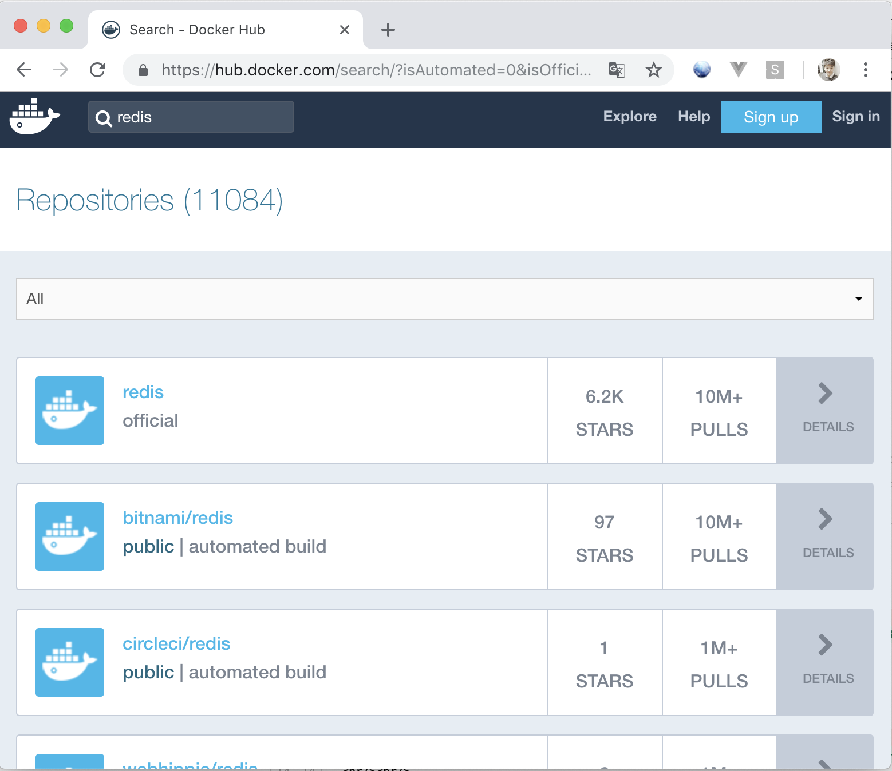
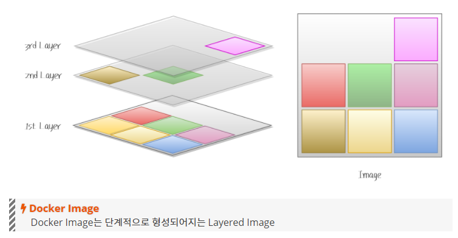

들어가며
지난 장에서는 Docker에 대한 개념, Image와 컨테이너, VM과의 차이점등을 그림으로 설명하였습니다.
이번 장부터는 Docker를 linux서버에 설치하는 과정을 설명하고자 합니다.
(Linux서버 설치는 hyper-v를 이용하여 vm으로 설치 하였습니다. <차후에 hyper-v 설정기를 올릴 예정입니다.>)
Windows, Mac에도 설치 할 수 있지만, Linux에 설치하는게 거의 표준이다 싶히 사용되고 있으며, Windows, Mac에 설치를 하더라도 어차피 가상화 환경에서 Docker가 설치 되기 때문에… linux를 설치하여 Docker를 설치하였습니다.
(지울 때 편하게 지우고 싶어서 그런건 안비밀)
CentOS 7 환경에서 Docker 설치하기
Docker를 설치하는 방법은 다양한 방법이 있겠지만.. 가장 간단한 방법으로 설치해 보도록 하겠습니다.
설치 환경은 아래와 같습니다.
- OS: CentOS 7 (VM 환경(Hyper-v)에서 테스트)
- user: docker-user (일부러 root가 아닌 사용자를 생성하였습니다… 이유는 아래에)
- SW: Redis 5
Docker 다운로드 yum을 이용해서 Docker를 받는 방법도 있지만,
최신버전이 아닙니다.
차후 Docker-compose를 사용하기 위해서는 Docker버전이 1.13 이상이 되야 합니다.
따라서 한번에 패키지로 설치해 주는 url로 설치하도록 합니다.
1 | sudo curl -fsSL https://get.docker.com/ | sudo sh |
Docker의 Permission
Docker를 설치하고 확인하기 위해 Docker 명령을 입력하였습니다.
1 | docker version |

docker명령을 입력했을 시, permission denied 에러가 발생한 것을 볼 수 있습니다.
docker는 명령을 실행 할 때 기본적으로 root계정을 필요로 합니다. (docker의 특성상 시스템의 내부적인 부분에 접근하는 게 많다보니… 그렇다고 합니다.)
그렇기 때문에 sudo명령을 사용하여 docker 명령을 실행 할 수 있습니다.
하지만 sudo가 너무 귀찮다! 하시는 분들은... 아래 명령을 실행하여 계정을 docker 그룹에 포함 시켜주시면 됩니다.
1 | sudo usermod -aG docker $USER |
1 | docker version |

이제 sudo 명령 없이도 docker 명령어 실행이 잘 됩니다!
간단한 Docker Container(깡통)를 만들어 봅시다!
Docker Hub(https://hub.docker.com) 사이트에 들어가면 우리가 필요로하는 많은 프로그램들이 이미지로 올라가 있습니다.
이번 예제에서는 Redis를 가지고 Docker Container를 만들어보도록 하겠습니다.

docker hub 사이트에서 redis를 검색해 보았습니다.
여러가지 redis 이미지가 보이는데 official이라고 되어있는 것이 공식이미지 입니다.
bitnami/redis라고 되어있는 것은 docker hub의 사용자들이 올린 이미지입니다.

official 이미지의 상세 버전을 보니 4.x~5.0.1까지 있습니다.
이번 예제에서는 그나마 stable한 버전인 인 5.0-alpine 버전을 사용해 보도록 하겠습니다.
Docker 이미지 다운로드 (Docker hub -> Docker Client)
pull 명령을 통해 docker hub에 있는 이미지를 다운로드 합니다.
1 | docker pull redis:<tag> # ex) redis:5.0-alpine, redis:4-alpine, redis:latest(가장 마지막 배포 버전입니다.) |
Docker 이미지 확인 / 삭제
Docker 이미지 확인
images 명령을 이용하여 docker image리스트를 확인합니다.
1 | docker images |
- 자주 사용하는 options
- -a –all : 숨겨진 임시 이미지를 보여줍니다.
- -f –filter : filter를 이용하여 이미지 조회 조건을 변경하여 조회 할 수 있습니다.
- -q –quite : image의 image ID만 출력합니다.
docker의 이미지는 1개의 파일이 아닌, 여러 이미지의 레이어(Layer)로 구성되어 있습니다.
따라서 Redis이미지를 다운받더라고 Redis 이미지 하나가 아닌 여러 이미지의 레이어로 구성되어 있습니다.

따라서 하나의 이미지라도 여러 이미지가 투영되어 보이는 결과물이라 볼 수 있습니다.
Docker 이미지 삭제
rmi 명령을 이용하여 docker의 image를 삭제 할 수 있습니다.
1 | # ex) docker rmi redis:5.0-alpine, docker rmi <imageID> |
- 자주 사용하는 Options
- -f –force : 이미지를 강제로 삭제합니다. (해당 이미지로 만들어진 Docker Container가 존재하는 경우 이미지를 삭제 할 수 없는데, 그 때 강제로 삭제 하기위해 사용)
Docker Container 생성 / 삭제
Docker Container 생성
run 명령으로 Container를 생성합니다.
1 | # ex) docker run -it -d redis:5.0-alpine, |
자주 사용하는 Options
- -d –detach : Container 생성 후 Background로 실행 (이 옵션 없을 시, Redis 같은 경우에는 Console에 Redis log가 지속적으로 표시됩니다.)
- -h –hostname : Container 명 지정
- -i –interactive : 소통형 모드로 실행 (주로 ubuntu와 같은 Container 실행 시 사용)
- -p –publish : 해당 Container의 외부 Port 지정 (10000:6379) (외부:내부) 형식으로 지정
- -P –publish-all : 여러개의 Port 노출 (1000-1100)
- –rm : Container 종료 시, Container 삭제
(자주 사용되는 옵션입니다) - -v –volume : 외부 볼륨 연동 /home/user/data:/data (외부 OS 디렉토리:컨테이너 내부 디렉토리) - 상호 데이터가 공유됨
Docker Container 목록 조회
ps 명령으로 Container 목록을 조회합니다.
1 | docker ps {options} |
- 자주 사용하는 Options
- -a : 비활성 상태의 Container까지 조회
- -q : Container ID만 조회
- -f –filter : Container 조회 시, Filter를 이용하여 조회
Docker Container 내부 접속
attach 명령을 이용하여 접속
1 | docker attach [container명/container ID] |
attach 명령은 /bin/bash로 실행 되기 때문에, Container에 /bin/bash가 없는 경우에는 접속이 불가능 합니다.
exec 명령을 이용하여 Container 내부 명령 수행
1 | # ex) docker exec -it redis:5.0-alpine /bin/sh |
- 자주 사용하는 options
- -d –detach : 명령수행을 Background 모드로 수행
- -e –env : 환경변수 (Environment) 설정
- -i –interaction : 대화형 모드로 설정
Docker Container 삭제
rm 명령으로 Container를 삭제 합니다.
1 | # ex) docker rm -f redis:5.0-alpine |
- 자주 사용하는 options
- -f –force : 활성(active) 상태의 Container 강제삭제
- -l –link : Container간 link가 관계인 Container 삭제
- -v –volumes : Container 관련 볼륨(외부 디렉토리) 삭제
자주 사용한 명령어 모음
1 | #Container 전체 삭제 (-a -q 옵션으로 전체 Container의 ID만 뽑아온다.) |